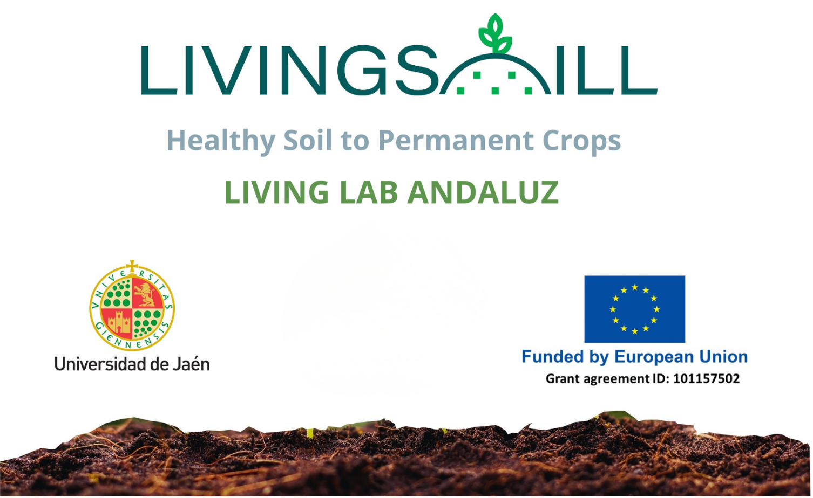

LivingSoiLL · Living Lab andaluz
ActivoLiving Lab andaluz coordinado por la UJA en el marco de la Mision Europea de Suelos, conectado con el Espacio de Datos para acelerar adopcion y validacion de soluciones en campo.
Financiacion: 1.200.000 EUR
- Integracion con iniciativas europeas de referencia (SoilWise, EU Soil Observatory/ESDAC).
- Ecosistema de entidades publicas y privadas: IFAPA, ITACYL, cooperativas, almazaras y actores del territorio.